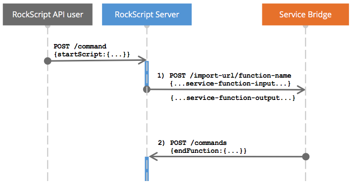

Service SPI
The services SPI represents the communication protocol between the RockScript engine and the service bridge. Service bridges often translate between the RockScript services SPI protocol and a REST API to make the REST API functionality available as a service function in RockScript.
The next sequence diagram represents the most common scenario:

The blue sections on the RockScript Server line indicate when it’s executing the script. In between the 2 blue sections the complete execution state is in the event store and no threads nor memory are consumed.
The next diagram shows the same but in more technical words

For the startScript command, please refer to the
Start script API docs.
Import URL is service bridge base URL
To import a service, all you need to do is import the URL of the
service bridge. The server will prepend http:// if that’s not
already present. For example:
var myService = system.import('mycompany.com/hello');
myService.hello('world');
1) Start service function invocation
The request to the service bridge
2) Function invocation end callback
This request is documented in End function command
Function execution error
Alternatively to the callback that ends the function invocation, the service bridge can also let the server know that there’s an error. Optionaly the service bridge can ask to retry the service function invocation some specified time in the future.
For details, see Service function error command